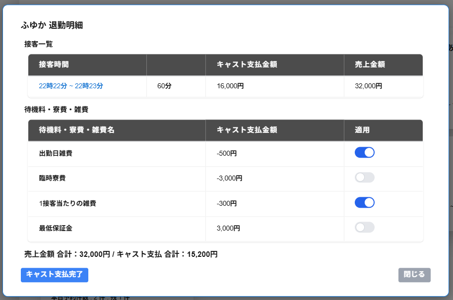

キャスト支払完了をもって退勤とします。
退勤明細の画面には以下の項目が表示されます。
・接客一覧
退勤する出勤内での接客の一覧が表示されます。
接客の一覧には以下の項目が表示されます。
・接客時間・接客時間（分）
接客時間の列には該当の接客の接客時間（開始時間〜終了時間）が表示されます。
接客時間の右の列には該当の接客の接客時間（分）が表示されます。
・キャスト支払金額
該当の接客のキャスト支払金額が表示されます。
・売上金額
該当の接客の請求金額が表示されます。
※接客詳細を確認したい接客の行を選択すると該当の接客詳細を確認できます。
・待機料・寮費・雑費
次の項目(項目2)で説明させていただきます。
・合計
売上金額 合計と、キャスト支払 合計が表示されます。
・キャスト支払完了
キャスト支払完了をクリックすると、表示内容でキャスト支払を確定し、退勤をすることができます。
